Sandwichería · Belgrano, Buenos Aires
Sándwiches benditos. Pecado es no probarlos.
Milanesas crispy, carne desmenuzada y pan enmantecado, armados a mano cuando los pedís. Todos vienen con papas. Nos encontrás en Ciudad de la Paz 514.
Lun a jue 12–16 y 18–22 · Vie y sáb hasta las 23
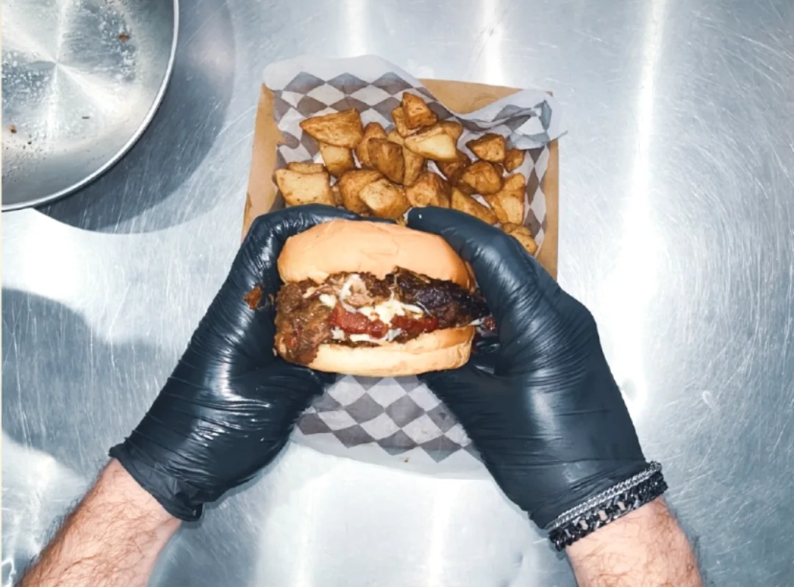
San Phillypo · para caer en la tentación
Cinco santos, una sola fe: el sándwich bien hecho, abundante y con papas.
Hecho al momento
Empanamos, desmenuzamos y armamos cuando llega tu pedido. Nada espera en una bandeja.
Pan que hace milagros
Pan suave por dentro, tostado en la plancha. El del Phillypo, además, enmantecado.
Siempre con papas
Cada sándwich sale con papas del cielo: tomillo, romero y manteca. Sin cargo extra.
01 — La carta
Elegí a tu santo. Todos vienen con papas.
Cinco sándwiches, cada uno con su milagro. Si no sabés cuál pedir, empezá por la Santa Suprema: es la que convierte a los escépticos.
-
Santa Suprema
Un clásico celestial
Milanesa de pollo crispy, mozzarella, lechuga, tomate, pesto y mayo cítrica.
Pedir la Santa Suprema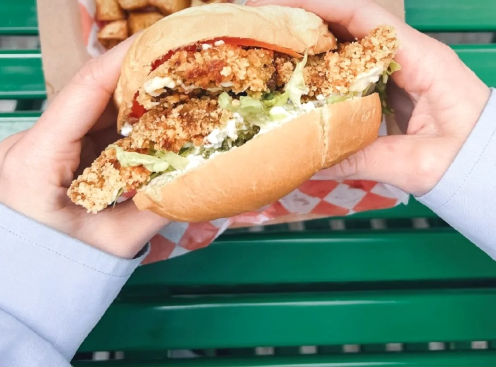
-
San Milán
El milagro argentino
Milanesa de carne crispy, mozzarella, tomate, lechuga, pesto y lactonesa de ajo.
Pedir el San Milán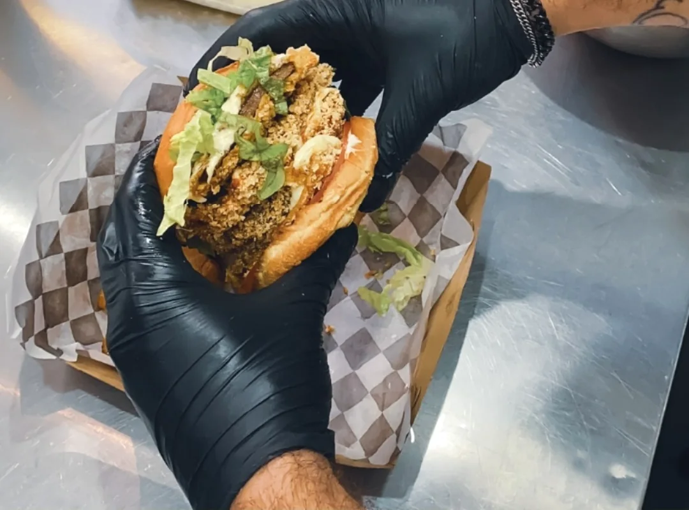
-
San Phillypo
Para caer en la tentación
Carne desmenuzada, barbacoa, cebolla, mozzarella y panceta en pan enmantecado.
Pedir el San Phillypo -
Santa Girgola
Suave pero divina
Milanesa de gírgolas, mozzarella, rúcula, cebolla y mostaza dulce. La opción sin carne.
Pedir la Santa Girgola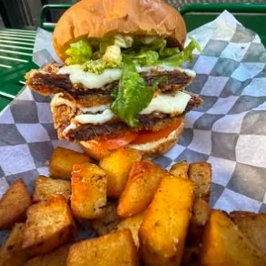
-
Santa Porchetta
Bendita tú eres
Porchetta, provoleta, morrón inglés y mayo de ajo.
Pedir la Santa Porchetta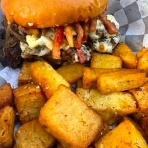
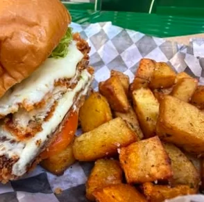
Extras
- Papas del cielo
- Nuestras clásicas, con tomillo, romero y manteca.
- Papas infernales
- Papas fritas con spicy mayo y merkén.
- Papas pecadoras
- Papas fritas con mozzarella y panceta.
Bebidas benditas
- Agua
- Con o sin gas.
- Gaseosas
- Bien frías.
- Cervezas
- Para acompañar al Phillypo.
- Vinos
- Porque hasta los santos brindan.
02 — Armá tu santo
Elegí un santo y miralo armarse, capa por capa.
Así se construye cada sándwich en la plancha, de abajo hacia arriba. Pasá por una capa de la lista para encontrarla en el dibujo.
Santa Suprema
- 08Pan
- 07Pesto
- 06Mozzarella
- 05Milanesa de pollo crispy
- 04Tomate
- 03Lechuga
- 02Mayo cítrica
- 01Pan
03 — Proceso artesanal
Guantes negros, plancha caliente y ningún atajo.
Lo que ves en las fotos es lo que te llega: sándwiches altos, que se desarman en la primera mordida, con papas que crujen.
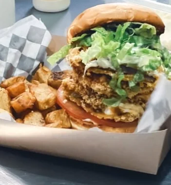
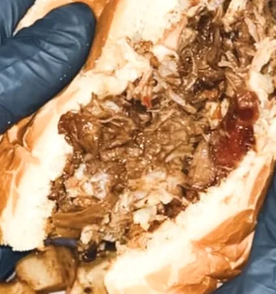
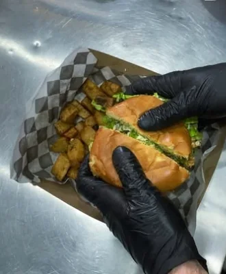
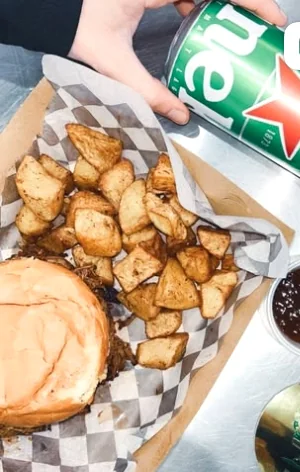
★★★★★
“…sanguches que no encontré en otro lugar, de mucho sabor, abundantes y se nota la muy buena calidad de los ingredientes y materia prima. Volveré nuevamente.”
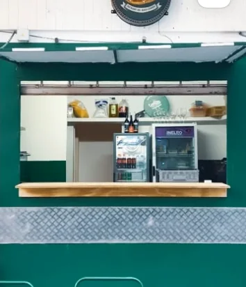
04 — El local
Una ventanita verde en el límite de Belgrano y Colegiales.
Pedís en la ventana, te lo llevás o te sentás en los bancos de afuera. Si querés ganar tiempo, mandanos el pedido por WhatsApp y pasás a buscarlo.
Ciudad de la Paz 514C1426AGJ · Ciudad de Buenos Aires
| Lunes | 12–16 · 18–22 |
|---|---|
| Martes | 12–16 · 18–22 |
| Miércoles | 12–16 · 18–22 |
| Jueves | 12–16 · 18–22 |
| Viernes | 12–16 · 18–23 |
| Sábado | 12–16 · 18–23 |
| Domingo | Día de descanso |
Consultá si estamos abiertos por WhatsApp
05 — Preguntas
Lo que nos preguntan antes del primer bocado.
¿Cómo hago un pedido para llevar?
Escribinos por WhatsApp con lo que querés y tu nombre. Te avisamos cuánto tarda y lo pasás a buscar por Ciudad de la Paz 514 recién hecho.
¿Tienen opción sin carne?
Sí: la Santa Girgola lleva milanesa de gírgolas, mozzarella, rúcula, cebolla y mostaza dulce. Suave, pero divina.
¿Los sándwiches vienen con papas?
Todos. Cada santo sale con papas del cielo. Si querés pecar un poco más, pedí las infernales o las pecadoras como extra.
¿Hacen envíos?
Consultanos por WhatsApp según tu zona y el horario. Si estás cerca, lo más rápido es pasar a retirar.
¿Qué días abren?
De lunes a jueves de 12 a 16 y de 18 a 22. Viernes y sábados de 12 a 16 y de 18 a 23. Los domingos descansamos.
¿Otra duda? Preguntanos por WhatsApp
Tenés hambre. Nosotros, la respuesta a tus plegarias.
Mandanos tu pedido y en un rato tu santo está listo, con papas recién hechas.
Pedí por WhatsApp